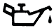
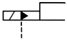

지게차유사(롤러,기중기등) (2013-07-21 기출문제)
1. 다음 중 디젤 기관에만 있는 부품은?
- 워터펌프
- 오일펌프
- 발전기
- 분사펌프
(정답률: 74%)

2. 디젤엔진 연소 과정 중 연소실 내에 분사된 연료가 착화될 때까지의 지연되는 기간으로 옳은 것은?
- 직접 연소 기간
- 화염 전파 기간
- 착화 지연 기간
- 후 연소 기간
(정답률: 84%)
3. 엔진 시동 전에 해야 할 가장 중요한 일반적인 점검 사항은?
- 실린더의 오염도
- 충전장치
- 유압계의 지침
- 엔진오일과 냉각수의 양
(정답률: 80%)
4. 디젤기관의 연료분사펌프에서 연료 분사량 조절은?
- 프라이밍 펌프의 조정
- 리미트 슬리브의 조정
- 플런저 스프링의 장력 조정
- 컨트롤 슬리브와 피니언의 관계 위치를 변화하여 조정
(정답률: 36%)
5. 기관온도를 일정하게 유지하기 위해 설치된 물 통로에 해당 되는 것은?
- 오일 팬
- 밸브
- 워터 자켓
- 실린더 헤드
(정답률: 84%)
6. 기관에서 열효율이 높다는 의미는?
- 일정한 연료 소비로서 큰 출력을 얻는 것이다.
- 연료가 완전 연소하지 않는 것이다.
- 기관의 온도가 표준보다 높은 것이다.
- 부조가 없고 진동이 적은 것이다.
(정답률: 86%)
7. 오일 압력이 낮은 것과 관계없는 것은?
- 커넥팅로드 대단부 베어링과 핀 저어널의 간극이 클 때
- 실린더 벽과 피스톤 간극이 클 때
- 각 마찰 부분 윤활 간극이 마모되었을 때
- 엔진오일에 경유가 혼입되었을 때
(정답률: 16%)
8. 디젤기관에서 연료 라인에 공기가 혼입되었을 때의 현상으로 가장 적절한 것은?
- 분사압력이 높아진다.
- 디젤 노크가 일어난다.
- 연료 분사량이 많아진다.
- 기관 부조 현상이 발생된다.
(정답률: 64%)
9. 그림과 같은 경고등의 의미는?

- 엔진오일 압력 경고등
- 와셔액 부족 경고등
- 브레이크액 누유 경고등
- 냉각수 온도 경고등
(정답률: 71%)
10. 엔진에서 라디에이터의 방열기 캡을 열어 냉각수를 점검했더니 엔진오일이 떠 있다면, 그 원인은?
- 피스톤 링과 실린더 마모
- 밸브 간격 과다
- 압축압력이 높아 역화 현상 발생
- 실린더 헤드 개스킷 파손
(정답률: 71%)
11. 다음 중 습식 공기 청정기에 대한 설명으로 틀린 것은?
- 청정효율은 공기량이 증가할수록 높아지며 회전속도가 빠르면 효율이 좋고 낮으면 저하됨
- 흡입 공기는 오일로 적셔진 여과망을 통과시켜 여과시킴
- 공기청정기 케이스 밑에는 일정한 양의 오일이 들어있음
- 공기청정기는 일정기간 사용 후 무조건 신품으로 교환함
(정답률: 61%)
12. 기관의 엔진오일 여과기가 막히는 것을 방지하기 위해서 설치하는 것은?
- 체크 밸브(check valve)
- 바이패스 밸브(bypass valve)
- 오일 디퍼(oil dipper)
- 오일 팬(oil pan)
(정답률: 49%)
13. 건설기계관리법 안전기준에서 정한 조명장치가 아닌 것은?
- 작업등
- 전조등
- 후면반사기
- 제동등
(정답률: 37%)
14. 6기통 디젤기관에서 병렬로 연결된 예열플러그가 있다. 3번 기통의 예열플러그가 단선되면 어떤 현상이 발생되는가?
- 예열플러그 전체가 작동이 안 된다.
- 3번 실린더 예열플러그만 작동이 안 된다.
- 2번과 4번의 예열플러그도 작동이 안 된다.
- 축전지 용량의 배가 방전된다.
(정답률: 77%)
15. 충전장치에서 발전기는 어떤 축과 연동되어 구동되는가?
- 크랭크축
- 캠축
- 추진축
- 변속기 입력축
(정답률: 71%)
16. 기동 전동기의 기능으로 틀린 것은?
- 기관을 구동시킬 때 사용한다.
- 플라이휠의 링기어에 기동 전동기의 피니언을 맞물려 크랭크축을 회전시킨다.
- 축전지와 각부 전장품에 전기를 공급한다.
- 기관의 시동이 완료되면 피니언을 링기어로부터 분리시킨다.
(정답률: 31%)
17. 배터리 취급 시에 지켜야 할 안전수칙으로 틀린 것은?
- 배터리 사용할 때는 반지를 끼지 말 것
- 배터리 취급 시는 손을 얼굴에서 멀리할 것
- 배터리 충전장치를 운반 시에는 제조회사 지시에 따를 것
- 배터리 액을 만들 때는 물을 황산에 부을 것
(정답률: 74%)
18. 다음 중 납산 배터리의 축전지액 성분으로 맞는 것은?
- 황산＋소금물
- 증류수＋황산
- 염산＋황산
- 염산＋증류수
(정답률: 82%)
19. 휠형 건설기계 타이어의 정비점검 중 틀린 것은?
- 적절한 공구와 절차를 이용하여 수행한다.
- 휠 너트를 풀기 전에 차체에 고임목을 고인다.
- 타이어와 림의 정비 및 교환 작업은 위험하므로 반드시 숙련공이 한다.
- 림 부속품의 균열이 있는 것은 재가공, 용접, 땜질, 열처리하여 사용한다.
(정답률: 75%)
20. 무한궤도식 건설기계에서 프론트 아이들러의 주된 역할은?
- 동력을 전달시켜 준다.
- 공회전을 방지하여 준다.
- 트랙의 진로 방향을 유도시켜 준다.
- 트랙의 회전을 조정해 준다.
(정답률: 66%)
21. 롤러에 부착된 부품을 확인하였더니 3.00-24-18PR로 명기되어 있었다. 다음 중 어느 것에 해당 되는가?
- 유압 펌프
- 엔진 일련번호
- 타이어 규격
- 시동 모터 용량
(정답률: 66%)
22. 다음은 건설기계를 조정하던 중 감전되었을 때 위험을 결정하는 요소이다. 틀린 것은?
- 전압의 차체 충격 경로
- 인체에 흐르는 전류의 크기
- 인체에 전류가 흐른 시간
- 전류의 인체 통과 경로
(정답률: 56%)
23. 아스팔트 피니셔의 작업장치에 대한 동력전달 순서가 바르게 연결된 것은?
- 엔진→스크류 스프레터→킅러치→변속기→켄베이어 중간축
- 엔진→메인클러치→변속기→작업클러치→스크류 스프레터
- 엔진→변속기→메인클러치→작업클러치→스크류 스프레터
- 엔진→클러치→변속기→스크류 스프레터→크롤러
(정답률: 40%)
24. 유체 클러치(fluid coupling)에서 가이드 링의 역할은?
- 와류를 감소시킨다.
- 터빈(turbine)의 손상을 줄이는 역할을 한다.
- 마찰을 증대시킨다.
- 플라이휠의 마모를 방지시킨다.
(정답률: 41%)
25. 자동변속기에서 토크 컨버터의 설명으로 틀린 것은?
- 토크 컨버터의 회전력 변화율은 3~5:1 이다.
- 오일의 충돌에 의한 효율 저하 방지를 위한 가이드 링이 있다.
- 마찰클러치에 비해 연료소비율이 더 높다.
- 펌프, 터빈, 스테이터로 구성되어 있다.
(정답률: 34%)
26. 클러치 차단이 불량한 원인이 아닌 것은?
- 릴리스 레버의 마멸
- 클러치판의 흔들림
- 페달 유격이 과대
- 토션 스프링의 약화
(정답률: 33%)
27. 무한궤도식 건설기계에서 트랙의 탈선 원인과 가장 거리가 먼 것은?
- 트랙의 유격이 너무 클 때
- 하부 롤러에 주유를 하지 않았을 때
- 스프로킷이 많이 마모되었을 때
- 프런트 아이들러와 스프로킷의 중심이 맞지 않을 때
(정답률: 63%)
28. 아스팔트 피니셔의 슬로프 센서는 무엇을 하는 것인가?
- 피니셔의 속도조절 장치
- 피니셔의 온도조절 장치
- 횡단물매의 검출 장치
- 종단물매의 속도조절 장치
(정답률: 20%)
29. 롤러의 차동장치에 대한 설명 중 틀린 것은?
- 조향할 때 골재가 밀리는 것을 방지한다.
- 좌우 바퀴의 회전비율을 다르게 한다.
- 조향을 원활하게 한다.
- 작업 시 자동제한 차동장치는 반드시 체결하고 한다.
(정답률: 47%)
30. 휠 구동식의 건설기계에서 기계식 조향 장치에 사용되는 구성품이 아닌 것은?
- 섹터 기어
- 웜 기어
- 타이로드 엔드
- 하이포드 기어
(정답률: 30%)
31. 건설기계의 정비명령은 누구에게 하여야 하는가?
- 해당기계 운전자
- 해당기계 검사업자
- 해당기계 정비업자
- 해당기계 소유자
(정답률: 57%)
32. 건설기계관리법상 건설기계의 구조변경검사 신청은 주요구조를 변경 또는 개조한 날부터 며칠 이내에 하여야 하는가?
- 5일 이내
- 15일 이내
- 20일 이내
- 30일 이내
(정답률: 32%)
33. 건설기계 등록신청 시 첨부하지 않아도 되는 서류는?
- 호적등본
- 건설기계 소유자임을 증명하는 서류
- 건설기계제작증
- 건설기계제원표
(정답률: 81%)
34. 건설기계 조종사 면허를 받지 아니하고 건설기계를 조종한 자에 대한 벌칙은?(관련 규정 개정전 문제로 여기서는 기존 정답인 1번을 누르면 정답 처리됩니다. 자세한 내용은 해설을 참고하세요.)
- 1년 이하의 징역 또는 300만 원 이하의 벌금
- 100만 원 이하의 벌금
- 50만 원 이하의 벌금
- 30만 원 이하의 과태료
(정답률: 75%)
35. 건설기계에 대하여 국토교통부장관이 실시하는 검사가 아닌 것은?
- 수시검사
- 연속검사
- 신규등록검사
- 구조변경검사
(정답률: 52%)
36. 다음 중 소형건설기계 조종교육이수만으로 면허를 취득할 수 있는 건설기계는?
- 5톤 미만의 기중기
- 5톤 미만의 롤러
- 5톤 미만의 로더
- 5톤 미만의 지게차
(정답률: 35%)
37. 건설기계 공제사업의 허가권자는?
- 국토교통부장관
- 시·도지사
- 경찰청장
- 안전행정부장관
(정답률: 44%)
38. 건설기계 조종사의 신고의무 내용이 아닌 것은?
- 주민등록번호가 변경될 경우
- 성명이 변경된 경우
- 국적이 변경된 경우
- 동일 시.도 안에서 주소지가 변경된 경우
(정답률: 66%)
39. 건설기계의 구조변경검사신청서에 첨부할 서류가 아닌 것은?
- 변경 전·후의 건설기계의 외관도
- 변경 전·후의 주요제원 대비표
- 변경한 부분의 도면
- 변경한 부분의 사진
(정답률: 48%)
40. 고의로 경상 2명의 인명피해를 입힌 건설기계를 조종한 자에 대한 면허의 취소·정지처분 내용으로 맞는 것은?
- 취소
- 면허효력 정지 60일
- 면허효력 정지 30일
- 면허효력 정지 20일
(정답률: 79%)
41. 내경이 작은 파이프에서 미세한 유량을 조정하는 밸브는?
- 압력보상 밸브
- 니들 밸브
- 바이패스 밸브
- 스로틀 밸브
(정답률: 59%)
42. 유압장치의 일상점검 사항이 아닌 것은?
- 유압탱크의 유량 점검
- 오일누설 여부 점검
- 소음 및 호스 누유 여부 점검
- 릴리프 밸브 작동시험 점검
(정답률: 83%)
43. 유압 실린더의 종류가 아닌 것은?
- 단동형
- 복동형
- 레이디얼형
- 다단형
(정답률: 62%)
44. 그림의 공·유압 기호는 무엇을 표시하는가?

- 전자·공기압 파일럿
- 전자·유압 파일럿
- 유압 2단 파일럿
- 유압 가변 파일럿
(정답률: 37%)
45. 베인 모터는 항상 베인을 캠링(cam ring)면에 압착시켜 두어야 한다. 이 때 사용하는 장치는?
- 볼트와 너트
- 스프링 또는 로킹 빔(locking beam)
- 스프링 또는 배플 플레이트
- 캠링 홀더(cam ring holder)
(정답률: 36%)
46. 유압유의 점도에 대한 설명으로 틀린 것은?
- 온도가 상승하면 점도는 저하된다.
- 점성의 점도를 나타내는 척도이다.
- 온도가 내려가면 점도는 높아진다.
- 점성계수를 밀도로 나눈 값이다.
(정답률: 69%)
47. 원동기(내연기관, 전동기 등)로 부터의 기계적인 에너지를 이용하여 작동유에 유체에너지를 부여해주는 유압기기는?
- 유압 탱크
- 유압 펌프
- 유압 밸브
- 유압 스위치
(정답률: 85%)
48. 실(seal)의 구분에서 밀봉장치 중 고정 부분에만 사용되는 것으로 정확하게 표현된 것은?
- 패킹
- 로드 실
- 개스킷
- 메커니컬 실
(정답률: 43%)
49. 유압이 규정치보다 높아 질 때 작동하여 계통을 보호하는 밸브는?
- 릴리프 밸브
- 리듀싱 밸브
- 카운터 밸런스 밸브
- 시퀸스 밸브
(정답률: 64%)
50. 유압펌프 중 토출량을 변화시킬 수 있는 것은?
- 가변 토출량형
- 고정 토출량형
- 회전 토출량형
- 수평 토출량형
(정답률: 85%)
51. 목재, 섬유 등 일반화재에도 사용되며 가솔린과 같은 유류나 화학 약품의 화재에도 적당하나 전기화재는 부적당한 특징이 있는 소화기는?
- ABC소화기
- 모래
- 포말소화기
- 분말소화기
(정답률: 50%)
52. 렌치 작업 시 안전사항으로 옳은 것은?
- 오픈렌치를 사용 시 몸의 중심을 옆으로 한 후 작업한다.
- 오픈렌치의 크기는 너트의 치수보다 약간 큰 것을 선택하여 사용한다.
- 볼트의 크기에 따라 큰 토크가 필요시에는 오픈렌치 2개를 연결하여 사용한다.
- 오픈렌치로 볼트를 조이거나 풀 때 모두 작업자의 앞으로 당긴다.
(정답률: 72%)
53. 운전자는 작업 전에 장비의 정비 상태를 확인하고 점검하여야 하는데 적합하지 않은 것은?
- 타이어 및 궤도 차륜상태
- 브레이크 및 클러치의 작동상태
- 낙석, 낙하물 등의 위험이 예상되는 작업 시 견고한 헤드 가이드 설치상태
- 모터의 최고 회전 시 동력상태
(정답률: 75%)
54. 불안전한 조명, 불안전한 환경, 방호장치의 결함으로 인하여 오는 산업재해 요인은?
- 지적 요인
- 물적 요인
- 신체적 요인
- 정신적 요인
(정답률: 63%)
55. 작업장에서 지켜야 할 안전수칙이 아닌 것은?
- 작업 중 입은 부상은 즉시 응급조치하고 보고한다.
- 밀폐된 실내에서는 장비의 시동을 걸지 않는다.
- 통로나 마룻바닥에 공구나 부품을 방치하지 않는다.
- 기름걸레나 인화물질은 나무상자에 보관한다.
(정답률: 87%)
56. 항타기 또는 항발기에 사용되는 권상용 와이어로프의 안전계수는 최소 얼마 이상이어야 하나?
- 10
- 8
- 5
- 4
(정답률: 65%)
57. 산업재해의 직접원인 중 인적 불안전 행위가 아닌 것은?
- 작업복의 부적당
- 작업 태도 불안전
- 위험한 장소의 출입
- 기계 공구의 결함
(정답률: 67%)
58. 다음 중 옳은 작업방법이 아닌 것은?
- 배터리 전해액을 다룰 때는 고무장갑을 껴야한다.
- 배터리는 그늘진 곳에 보관해야 한다.
- 공구 손잡이가 짧을 때는 파이프를 연결하여 사용한다.
- 무거운 것은 혼자 작업하면 위험하다.
(정답률: 86%)
59. 수공구를 사용할 때 주의사항으로 가장 거리가 먼 것은?
- 양호한 상태의 공구를 사용할 것
- 수공구는 그 목적 이외의 용도에는 사용하지 말 것
- 수공구는 올바르게 사용할 것
- 수공구는 녹 방지를 위해 기름걸레에 싸서 보관할 것
(정답률: 90%)
60. 이동식 크레인 작업 시 일반적인 안전대책으로 틀린 것은?
- 붐의 이동범위 내에서는 전선 등의 장애물이 있어도 된다.
- 크레인의 정격 하중을 표시하여 하중이 초과하지 않도록 햐여야 한다.
- 지반이 연약할 때에는 침하방지 대책을 세운 후 작업을 하여야 한다.
- 인양물은 경사지 등 작업바닥의 조전이 불량한 곳에 내려놓아서는 안 된다.
(정답률: 90%)